APC 技術ブログ
https://techblog.ap-com.co.jp/
株式会社エーピーコミュニケーションズの技術ブログです。
フィード
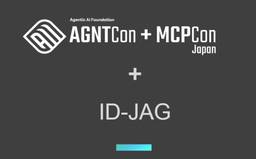
AGNTCon + MCPCon Japan 2026で聞いた「ID-JAG」という耳慣れない言葉から、MCPの企業向け認可を掘り下げてみた
APC 技術ブログ
目次 目次 はじめに ID-JAGとは 汎用的なフロー 同一エンティティがIdPと認可サーバーを兼ねられるか MCPへの応用: Enterprise-Managed Authorization Keycloakでの実装状況 Microsoftの対応状況（Entra ID / VS Code） API Management × MCP × Entra IDで実現する、もう一つの現実解 Entra IDがID-JAGに対応した場合の使い分けの予測 結びに ACS 事業部のご紹介 はじめに こんにちは。ACS事業部の折田です。 先日、AGNTCon + MCPCon Japan 2026に参加してき…
2日前
Datadog Cloud SIEM for AWS Fundamentalsに合格！
APC 技術ブログ
はじめに 試験概要と出題トピック 試験の基本情報 出題内容 学習方法 Datadog Learning Centerによるハンズオン ドキュメントによる知識の定着 攻略ポイント 出題傾向について 難易度について おわりに はじめに こんにちは、クラウド事業部の横山です。 今回は Datadog の資格のうち、Cloud SIEM for AWS Fundamentalsを受験しましたので、その合格体験記について記載します。 サンドボックス環境でSIEMに触れたことをきっかけに、資格取得を通して、知識の定着と客観的なスキルの証明につながると考え、受験することを決めました。 この記事が、Datad…
2日前
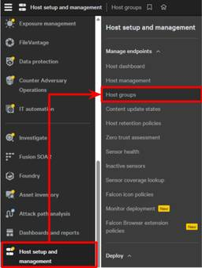
【CrowdStrike】ホストグループの仕様および設定手順
APC 技術ブログ
こんにちは！iTOC事業部0-WANの平松です。 今回は、CrowdStrikeの運用において非常に重要な「ホストグループ」の役割と、具体的な設定手順について解説します。 ホストグループとポリシーの基本 CrowdStrike Falconには、端末（エンドポイント）を保護・管理するための多様なポリシーが存在します。これらのポリシーを端末に適用するには、まず対象の端末を「ホストグループ（Host Group）」に所属させる必要があります。 ホストグループに端末を割り当てない限り、各ポリシーを適用することはできません。 ポリシー適用の基盤となるため、ホストグループの正しい設計と設定が運用の第一歩…
2日前
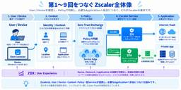
第10回 ここまで分かればZscalerの基本はOK ― 全体像を一枚につなげる
APC 技術ブログ
ここまでにZero Trust、ZIA、ZPA、Service Edge、Client Connector、Identityなどが登場しました。 第10回はChapter 0のまとめです。新しい用語を増やさず、第1～9回の要素を「UserからApplicationまで」という1本の流れにつなげます。 まず結論。すべては「Userを必要なApplicationへ安全につなぐ」ためにある Zscalerの基本を一言でまとめるなら、 UserやDeviceを確認し、Policyに基づいて、必要なApplicationへ安全にAccessさせる という考え方です。 その全体を支えるのがZero Tru…
2日前
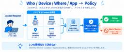
第9回 Zscalerはどうやって「あなた」を判断している？
APC 技術ブログ
「同じWebサイトや社内システムにアクセスしているのに、人によって許可されたり、止められたりするのはなぜ？」 Zscalerは送信元IP Addressだけを見てUserを判断するわけではありません。 Zero Trustでは、誰が・どのDeviceから・どこから・何へAccessするのかといったContextを組み合わせ、Policyに基づいて判断します。 まず結論。「あなた」は1つの情報だけでは決まらない Zscalerは、 Identity、Device、Location、ApplicationなどのContextを組み合わせ、PolicyでAccessを判断する という考え方を取ります…
2日前
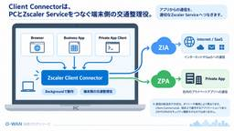
第8回 Client Connectorって何をしているの？
APC 技術ブログ
「PCに入っているClient Connectorって、結局何をしているの？」 Zscaler Client ConnectorはBackgroundで動作するため、Userが普段その存在を強く意識しないこともあります。 理解するときは、単なるVPN Clientではなく、端末上で通信を適切なZscaler Serviceへ導く“交通整理役”と考えると分かりやすくなります。 まず結論。Client Connectorは端末とZscalerをつなぐ入口 一言でいうと、Zscaler Client Connectorは、UserのPCやSmart Device上で動作し、構成やPolicyに応じて…
2日前
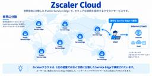
第7回 Zscalerはどこにある？「Service Edge」を理解する
APC 技術ブログ
「Zscalerはクラウド」と聞くと、「そのクラウドは、実際にはどこにあるの？」と思うかもしれません。 Zscalerは1台の装置ではなく、世界各地に分散したInfrastructureで通信やApplication Accessを処理します。その中心的な処理拠点がService Edgeです。 まず結論。Service EdgeはZscalerの処理を担う「接点」 一言でいうと、Service Edgeは、Userや通信がZscalerのServiceへ接続し、Policy適用やSecurity処理、Accessの仲介などを受けるための処理拠点です。 ZIAではInternet / SaaS…
2日前
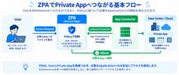
第6回 社内システムにつなぐとき、ZPAの中では何が起きている？
APC 技術ブログ
「社内システムへつなぐとき、ZPAでは実際に何が起きているの？」 第3回では、VPNが「Networkへの接続」、ZPAが「Applicationへの接続」を中心に考えることを整理しました。 では、Userが社内の経費精算Systemや業務Applicationを開こうとしたとき、ZPAの中ではどのように接続が成立するのでしょうか。 今回は細かな設定やProtocolではなく、 User → ZPA → App Connector → Private App という大きな流れを追い、ZPAが必要なApplicationとの接続を成立させる仕組みを理解します。 まず結論。ZPAはUser側とAp…
2日前
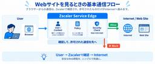
第5回 Webサイトを見るとき、Zscalerの中では何が起きている？
APC 技術ブログ
ブラウザーでWebサイトを開く。 ZIA（Zscaler Internet Access）を利用する環境では、その途中でさまざまなSecurity判断が行われています。 ZIAへ転送された通信では、誰の通信か、どこへAccessするのか、Policyに合うか、安全性に問題がないかなどを確認し、その結果に応じてAllow / Blockを判断します。 細かなTraffic Forwarding方式は後回しにし、まずUser → Zscaler → Internetという大きな流れを理解しましょう。 まず結論。Zscalerは「通り道」で判断する 一言でいうと、ZIAは、Internetへ向かう通…
2日前
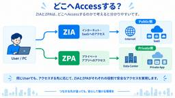
第4回 ZIAとZPA、何が違う？
APC 技術ブログ
「ZIAとZPA、名前はよく聞くけれど、結局どう使い分けるの？」 Zscalerを学び始めると、かなり早い段階でこの2つの名前が登場します。どちらもZero Trustの考え方を使ってAccessを安全にする仕組みですが、役割は同じではありません。 前回は、VPNが「Networkへの接続」を起点に考えるのに対して、ZPAは「許可されたApplicationへの接続」を起点に考えることを整理しました。 今回はさらに一歩進めて、ZIAとZPAを「どこへAccessするのか」という視点で整理します。 まず結論。違いは「Access先」 一言でいうと、 ZIA（Zscaler Internet Ac…
2日前
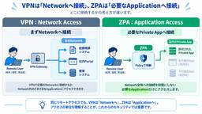
第3回 VPNがあるのに、なぜZPAが必要なの？
APC 技術ブログ
「社外から社内システムへつなぐなら、VPNで十分では？」 ZPA（Zscaler Private Access）の話をすると、よく出てくる疑問です。 VPNは今でも広く使われるRemote Accessの仕組みです。一方、働く場所やApplicationの配置が変わり、「社内Networkへ接続する」ことを前提にしないAccessも求められるようになりました。その代表がZTNA（Zero Trust Network Access）です。 今回はVPNを否定するのではなく、VPNの「Network Access」とZPAの「Application Access」は何が違うのかを整理します。 まず…
2日前
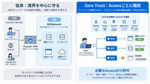
第2回 Zero Trustって「何も信用しない」ってこと？
APC 技術ブログ
「Zero Trustって、“誰も信用しない”ってことですよね？」 名前だけを見ると、そう感じるかもしれません。 しかし、Zero Trustは「社員も端末も全部疑って、何も使わせない」という考え方ではありません。大切なのは、社内にいる、会社の端末を使っている、といった理由だけで自動的に信頼しないことです。 前回は、Zscalerを「ユーザーとアプリの間で安全なアクセスを実現するプラットフォーム」として整理しました。今回は、その土台にあるZero Trustの考え方を、できるだけシンプルに理解していきます。 まず結論。「信用しない」より「確認してから許可する」 Zero Trustを一言で表す…
3日前
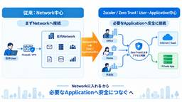
第1回 Zscalerって結局何をするもの？
APC 技術ブログ
「Zscalerって、結局何をするもの？」 初めて触れると、こんな疑問を持つ方は少なくありません。 「VPNの代わり？」「Firewall？」「Proxy？」――どれも関係しますが、一つの言葉だけでは全体像を捉えきれません。 この連載では、細かな設定に入る前にZscalerの主要な考え方を整理し、「頭の地図」をつくります。第1回では、まず「Zscalerは何をするものなのか？」をつかみましょう。 まず結論。Zscalerは「ユーザーとアプリの間」を安全につなぐ 一言でいうと、Zscalerは、ユーザーやデバイスと、利用したいアプリやサービスとの間で、安全なアクセスを実現するクラウドネイティブの…
3日前

【AGNTCon + MCPCon Japan 2026】 標準に準拠する重要性
APC 技術ブログ
標準に準拠する重要性 みなさんこんにちは。エーピーコミュニケーションズACS事業部の亀崎です。 今回は9月10日～11日に開催された「AGNTCon + MCPCon Japan 2026」のセッションの１つ、 「Running an MCP Proxy at Scale」を取り上げ、標準に準拠する重要性について考えて みたいと思います。 「Running an MCP Proxy at Scale」で紹介されていた課題 LLMクライアントは、初めての「 ユニバーサル 」なOAuthクライアントとなります。 それはどういうことか。 従来型のアプリケーションは特定のサービスに特定の順序でアクセス…
3日前
「AGNTCon + MCPCon Japan 2026」に参加してきました
APC 技術ブログ
はじめに みなさんこんにちは。エーピーコミュニケーションズACS事業部の亀崎です。 2026年9月10日～11日に、Agentic AI Foundationが主催する「AGNTCon + MCPCon」が渋谷で開催されました。 私もこのイベントに現地参加させていただきました。今回はその内容を簡単にご紹介させていただきます。 Agentic AI Foundation もしかするとご存じない方もいらっしゃるかもしれませんのでAgentic AI Foundationについて ご紹介します。 Agentic AI Foundation（略称AAIF）は、オープンソースエコシステムを支える Lin…
4日前

【文系・未経験】IT新卒1年目が体感した、資格取得のメリット
APC 技術ブログ
「資格取得って意味あるの？」という疑問を持ったことはありますか。今回のブログでは「文系出身、IT未経験、新卒一年目」という特定の状況で私が感じ取った資格取得の恩恵をリアルなエピソードと共に紹介します。
5日前
APアカデミー「生成AIアプリ開発で学ぶAzure入門研修」受講レポート
APC 技術ブログ
はじめに こんにちは、クラウド事業部の伊藤です！ 弊社には「APアカデミー」という技術系やビジネス系の社内研修が用意されています。 APアカデミー キャリアアップガイド 今日、入社後初めてのAPアカデミー「生成AIアプリ開発で学ぶAzure入門研修」を受講しました。 弊社で各社クラウド等の様々な環境で生成AIを扱うプロジェクトが増えていることもあり、経験が浅いAzureへの抵抗感や苦手意識を少しでも減らすことが目的でした。 この記事では、受講したAPアカデミーの概要や、個人的な感想をまとめます。 受講したAPアカデミーの内容 主な内容は以下の通り、前半は座学、後半はハンズオン形式でした。 RA…
6日前

Azure GPU VMで小型LLM推論を実測して、CPUと比較してみた
APC 技術ブログ
GPU CPU比較 はじめに こんにちは、APCのSAT室PE推進チームに所属している簗田です。 AzureでGPU推論環境を評価するとき、VMが作れただけでは実運用の判断はできません。 実際には、以下まで確認して初めて「使える環境」と言えます。 GPUドライバーが正しく認識されるか 推論サーバが安定して起動するか 負荷をかけたときにどの程度スケールするか 今回は、Azure GPU VM上で小型LLMを動かし、CPU実行との差を実測値で比較しました。 はじめに 今回のゴール 実験環境 検証時に決めたルール 実行フロー 単発ベンチマーク結果 同時実行ベンチマーク結果 CPU/GPU比較の要点 …
6日前

【Zscaler】テナント制限はどこまで細かくできるのか？~Google Drive で検証
APC 技術ブログ
目次 はじめに 事前確認（ポリシー設定前） 設定手順 1. Google Drive がSSLインスペクション対象になっていることを確認 2. Tenant Profile を作成 3. Cloud App Control Policy を作成 4. URL Categories を作成 5. URL Filtering Rule を作成 検証結果（設定反映後の挙動） アクセスパターンのまとめ おわりに はじめに こんにちは！iTOC事業部 0-WAN 阿部です。 サイバー攻撃への脅威が増すなか、DLP（データ漏洩防止）対策に頭を悩ませているIT担当者様も多いのではないでしょうか。特に、社用・…
7日前

【OCI】Observability Professional合格記
APC 技術ブログ
目次 目次 はじめに 資格の概要 受験の目的 受験前のスペック 試験の詳細 概要 範囲 合格へのルート 学習教材 学習サイクル 工夫した点 試験のポイント 受験してみた感想 さいごに おわりに はじめに こんにちは、エーピーコミュニケーションズの松尾です。 Oracle Cloud Infrastracture（OCI）の認定試験であるObservability Professional を受験して合格したので学習内容を紹介したいと思います。受験を検討中の方の参考になれば幸いです。 資格の概要 OCIの監視機能について問われる試験で、アラームや通知、可観測性などが範囲となります。 詳細は公式情…
7日前

【Backstage】NODE_OPTIONS=--no-node-snapshot 指定が不要に
APC 技術ブログ
はじめに みなさんこんにちは。エーピーコミュニケーションズ ACS事業部の亀崎です。 今回はちょっと技術的で細かいお話を。 2024年5月に「Node20以降でBackstageを実行する場合の注意事項」をご紹介しました。 techblog.ap-com.co.jp こちらの制限が2026年8月の Backstage v1.54から不要 になりました。 「注意事項」としてブログ記事にしていたこともありますので、その記事を上書きするべく 変更の内容についてご紹介したいと思います。 「NODE_OPTIONS=--no-node-snapshot」指定の経緯 なぜ 「NODE_OPTIONS=--…
11日前
【GitLab Duo Agent Platform】アラート原因を自律的に分析・特定・解決するカスタムフローを実装してみた
APC 技術ブログ
こんにちは、クラウド事業部 CI/CD導入支援サービスチームの西野です。 今回はGitLab Duo Agent Platform（以下、DAP）の機能の一つであるカスタムフローの具体的な活用例として、アラート原因を自律的に分析・特定・解決するカスタムフローの実装方法を紹介します。 DAPの概要については、以下の記事で紹介しておりますので、併せてご覧ください。 techblog.ap-com.co.jp また、本記事に関連するウェビナーのご案内もごさいます。詳しくは記事末尾のご案内をご参照ください。 目次 目次 Flows（フロー）について アラートを自律的に解決するカスタムフローの実装 本検…
13日前
【さくらのクラウド】K3s上でOpenTelemetry eBPF Instrumentation(OBI)を検証しSDK自動計装との棲み分けを確認した
APC 技術ブログ
さくらのクラウドの「モニタリングスイート」とOTel eBPF Instrumentation（OBI）を組み合わせ、K3s環境におけるeBPFベースの自動計装を検証。SDK計装済みサービスとの棲み分けや自動スキップの挙動を実機で確認しました。
14日前
API Management ハンズオン三部作で辿る、MCPとAI Agentのセキュアな統合
APC 技術ブログ
目次 目次 はじめに 1. 三部作の全体像 2. タロットの大アルカナで読み解く三つの段階 3. 技術的な見どころ 結びに ハンズオンページ（ここから始められます） ACS 事業部のご紹介 はじめに こんにちは。ACS事業部の折田です。 組織の中で MCP（Model Context Protocol）サーバーや AI エージェントが増えてくると、新しい課題が見えてきます。 多数のMCP サーバー/エージェントをどう安全に管理するかという問題が出てきます。 さらに、MCP やエージェント、Skill が部署やリポジトリをまたいで増えていく中で、それらをどう一元的に把握し、開発者に届けるか——こ…
14日前
認知負荷を下げるだけでいいのか。プラットフォームに必要な「メカニカルシンパシー」とは何か
APC 技術ブログ
はじめに 想定読者 書籍から得た視点 「隠す」と「理解させる」は、本当に矛盾するのか プラットフォーム設計での線引き AI時代におけるメカニカルシンパシーの重み まとめ はじめに こんにちは、ACS事業部 の小原です。 Platform Engineering や Internal Developer Platform を語るとき、必ずと言っていいほど出てくるキーワードが「認知負荷の削減」です。標準化されたテンプレート、事前設定済みの自動アクション、一箇所に集約されたドキュメントなど、開発者が余計なことを考えずに価値を生み出せるよう、プラットフォームチームは複雑さを隠す努力を積み重ねています。…
15日前
【Backstage】 New Frontend System導入ガイド （Part4「Home Pluginの導入と/(root)パスの変更」）
APC 技術ブログ
はじめに 皆さんこんにちは。エーピーコミュニケーションズ ACS事業部 亀崎です。 Backstage New Frontend System 導入ガイド 第1回 〜 第3回 いかがでしょうか。 すこしずつどのように設定するのかといったことも見えてきたのではないかと思います。 【Backstage】 New Frontend System導入ガイド （Part1「SSOの設定」） - APC 技術ブログ 【Backstage】 New Frontend System導入ガイド （Part2「サイドメニューの設定」） - APC 技術ブログ 【Backstage】 New Frontend Sy…
15日前
【2026年8月17日適用】Zscaler FY27新SKUを解説
APC 技術ブログ
こんにちは、エーピーコミュニケーションズ 0-WANの山根です。 Zscalerのライセンスが新体系に変わりますので本記事にて解説させていただきます！！ 4つのPlatformライセンスの違い 本記事は、2026年8月時点で確認できるZscaler FY27のSKU情報をもとに、公開可能な範囲で概要を整理したものです。FY27 SKUは2026年8月17日から適用されます。実際の提供機能、利用条件、最低契約数、追加SKU、価格などは、契約内容や地域によって異なる場合があります。正式な見積・設計時には、最新のZscaler公式資料および販売パートナーへご確認ください。 Zscalerでは、202…
16日前
今からでも間に合う 開発者ポータルBackstage入門
APC 技術ブログ
はじめに 皆さんこんにちは。エーピーコミュニケーションズ ACS事業部の亀崎です。 2026年8月24日、弊社のオンラインIT勉強会「8a1（ハーイ）」にて、登壇させていただきました。 8a1-apc.connpass.com スライドはこちらです www.docswell.com セッション動画も公開されています。 youtu.be 今日はその内容をさらに簡単にしてご紹介したいと思います。 Backstage 入門 Backstageとは Backstageというのは 音楽配信大手のSpotify社が自社サービスの開発用として作られたもので、2020年にOSSとして公開、CNCFに寄贈された…
18日前
グラフDBの移行に必要な考慮事項
APC 技術ブログ
こんにちは。ACS事業部の簗田です。 最近、AIエージェントやナレッジグラフのバックエンドとして、Graph Database（グラフDB）を利用する構成を目にする機会が増えてきました。 そんな中で、 「AWSのAmazon Neptuneで動いているグラフDB基盤をAzureへ移行するとしたら、何を考えればいいんだろう？」 という疑問が出てきました。 最初は、 Amazon Neptune → Azure Cosmos DB と置き換えればいいのでは？ ……と思っていたのですが、調べてみると、そんなに単純な話ではありませんでした（笑）。 グラフDBでは、 どのデータモデルを使っているのか ど…
19日前
社内テンプレートに沿ったスライド生成AIツール ～「それっぽい」を卒業するための挑戦～
APC 技術ブログ
こんにちは。ACS事業部 SAT室の竹江です。 生成AIにスライド作成させる際、テンプレートを渡しても、作成されたスライドは色や雰囲気が似ているだけで、テンプレートのデザインに完全には沿ってくれないという悩みはありませんか。 私たちも不完全だと思いながらそのまま使うか、結局は手作業で修正する必要がありました。 そこで、2026年8月現在、テンプレートを踏襲したスライドの自動生成方法を検討し開発を始めました。 本記事では、Step1で実現した「テンプレートに沿ったスライド生成」と、Step2で取り組んでいる「資料からのスライドコンテンツ作成」について、開発中に分かった課題とともに紹介します。 生…
20日前